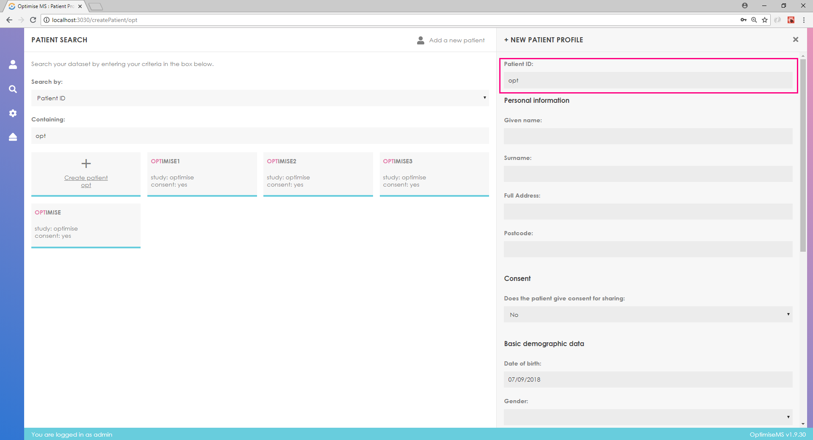
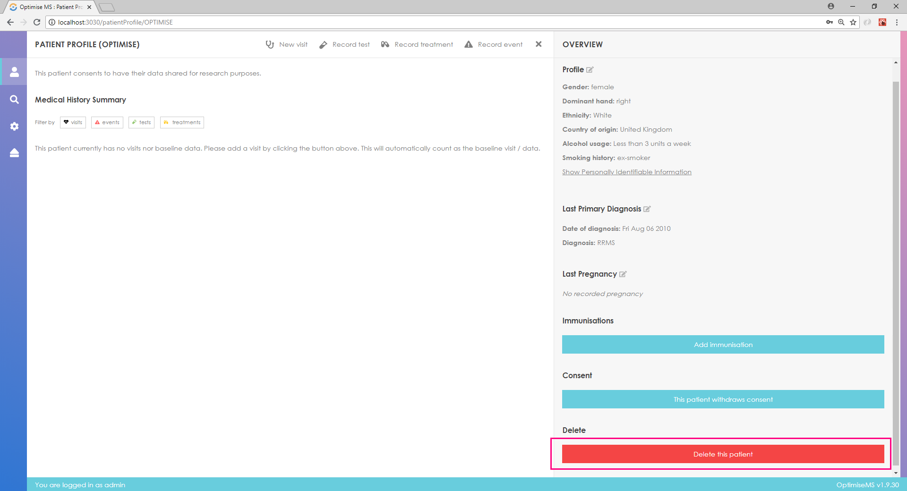

OPTIMISE MS is a system for recording data including demographics, clinical events, treatments and tests according to CDISC standards for Multiple Sclerosis. OPTIMISE MS allows researchers to better monitor MS patients’ progress, record outcomes and evaluate treatments.
The user can enter demographic, medical history and family medical history, clinical event, visit, test and treatment data.
OPTIMISE MS can be used in two modes; the off-site mode when networking is enabled and the on-premise mode when networking is disabled.
Logging in
To start using the OPTIMISE portal first open your favorite modern browser.
Then, enter the hosting address in the address bar.
You should see the following screen. Enter the user name and password that were given to you and click the Sign in button. The default username is admin and the password is admin.

If the log-in is successful, you should see the following screen.

If the log-in is unsuccessful, you will get a message. Re-enter user credentials.

Searching patients
In order to search for a patient, click in the search box and enter the patient ID. Choose from the list of patient IDs below the search box.

A timeline and any Medical History information about the patient already in the database will be available in the left panel. The patient profile is available in the right panel. Primary Diagnosis (if entered), Immunisation and Pregnancy information is also available in the right panel. The data entry for these sections is described in the section Entering patient data.
Creating a new patient
In order to create a new patient, click on the search box button and enter the patient ID. If there are no patients with the entered ID, you may create a new patient by clicking the button as shown below.

Once you click the Create button, you should fill the following form and click Submit in order to create the patient. A warning message will be shown if any of the field(s) are not filled.
If the patient creation is successful, you should see the following page.

In order to return to the Initial page, click the button near the top centre of the screen highlighted below.

In order to update the consent, click on the consent button as shown below.

The current consent status of the patient is always shown on screen.

You can delete the patient using the delete button.

Entering patient data
In order to enter Immunisation data, click on Add immunisation.

Enter any data as shown below.

Enter any data as shown below and click Submit to create a new immunisation entry.
The new entry will be added to the list of immunisations.

In order to enter Pregnancy data, click on Record pregnancy.

Fill in the relevant form and click Submit.

The new pregnancy information will be added to the list.

The visit menu is highlighted in red below.

In order to create a visit, click on the Create visit button at the top centre of the page. To enter Test, Treatment and Clinical Event data, you need to create a visit first.

Fill in the required fields and click submit to create the visit.

The new entry will be added to the Medical History section.

Click on Edit / Add and fill the fields in the right panel as required. Click Save at the bottom right of the page to save the entry.

In order to create a new Test, hover over the appropriate button and select a visit.


Fill in the treatment form in the right panel and click submit to create a new treatment.

The new entry will be added to the relevant Visit entry in the Medical History section. Click on 'Interruption' to enter data for any interruptions.


In order to enter clinical event data, hover over Record Event and select a visit.

Fill in the new CE form in the right panel and click submit to create the entry.

The new entry will be added to the relevant Visit entry in the Medical History section. Click on 'Results' to enter further test data.

Using the Timeline
You may click on the Timeline to access (view/edit) the corresponding entry in Medical History Summary.

Exporting patient data
In order to export the database as separate csv files, click on the export button (highlighted in red) and choose where to save the files.

Admin settings
The administrator can read messages about the software, manage the users (create and delete user accounts) and view the action log by accessing the Admin settings.


The administrator can manage the users (create and delete user accounts) by accessing the relevant option (Manage users) in Admin menu. The Admin menu can be accessed by clicking the icon highlighted in red.

The administrator can view the access log by clicking on View access log in the Admin menu.

Logging out
To log out click on the icon located at the bottom left of the page as shown below.